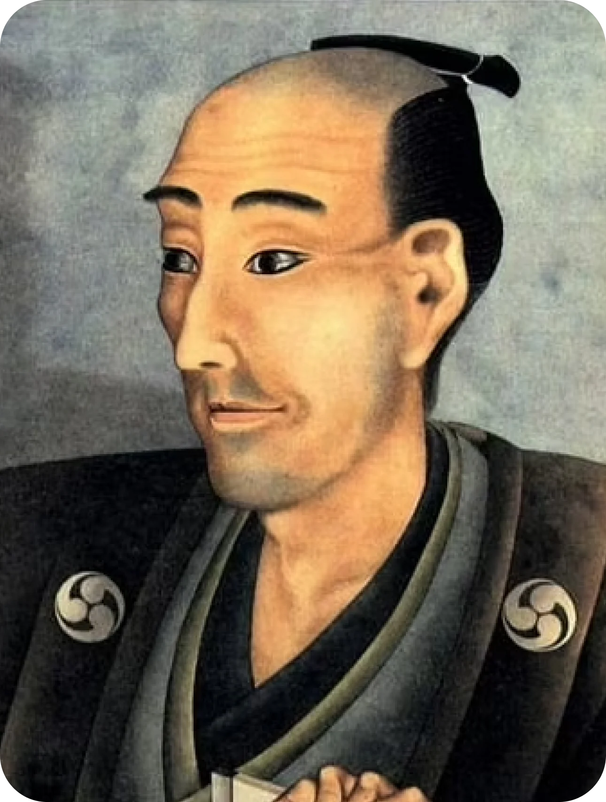
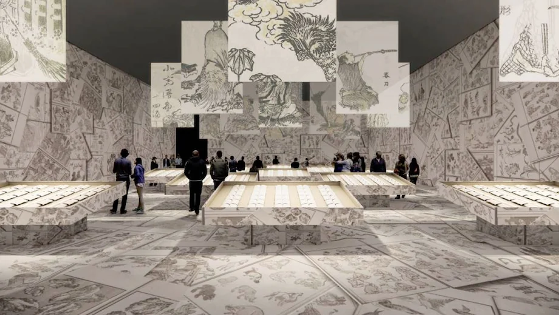

The Exhibition
Celebrating ukiyo-e artist Katsushika Hokusai’s 260 birthday, a complete out-of-this-world Hokusai art exhibition will be held this summer. The complete “Hokusai Manga” or Hokusai Sketches collection and “Thirty-six Views of Mount Fuji” print series will be displayed. Another portion of the exhibition will have Hokusai’s scenic art pieces and drawings of commoners’ daily lives and visions of fantasy on digital display. The fibers of Japanese paper can be clearly seen on the high quality digital images.
The lifeof a master
Katsushika Hokusai is regarded as one of the most influential and creative minds in the history of Japanese art. His unique social observations, innovative approach to design and mastery of the brush made him famous in Edo-period Japan and globally recognised within a decade of his death.
He created the monumental Thirty-Six Views of Mount Fuji both as a response to a domestic travel boom in Japan and as part of a personal obsession with Mount Fuji. It was this series, specifically The Great Wave off Kanagawa and Fine Wind, Clear Morning, that secured his fame both in Japan and overseas. While Hokusai's work prior to this series is certainly important, it was not until this series that he gained broad recognition.
Starting as a young child, he continued working and improving his style until his death, aged 88. In a long and successful career, he produced over 30,000 paintings, sketches, woodblock prints, and images for picture books in total. Innovative in his compositions and exceptional in his drawing technique, Hokusai is considered one of the greatest masters in the history of art.


Infos & reservations
For general information about the museum,
the collection, our events program and other activities:
E-mail: info@hokusai.com
Phone: (+020) 570 52 00
Postal address: Hokusai, P.O. Box 52889,
2089 AJ Amsterdam, The Netherlands.